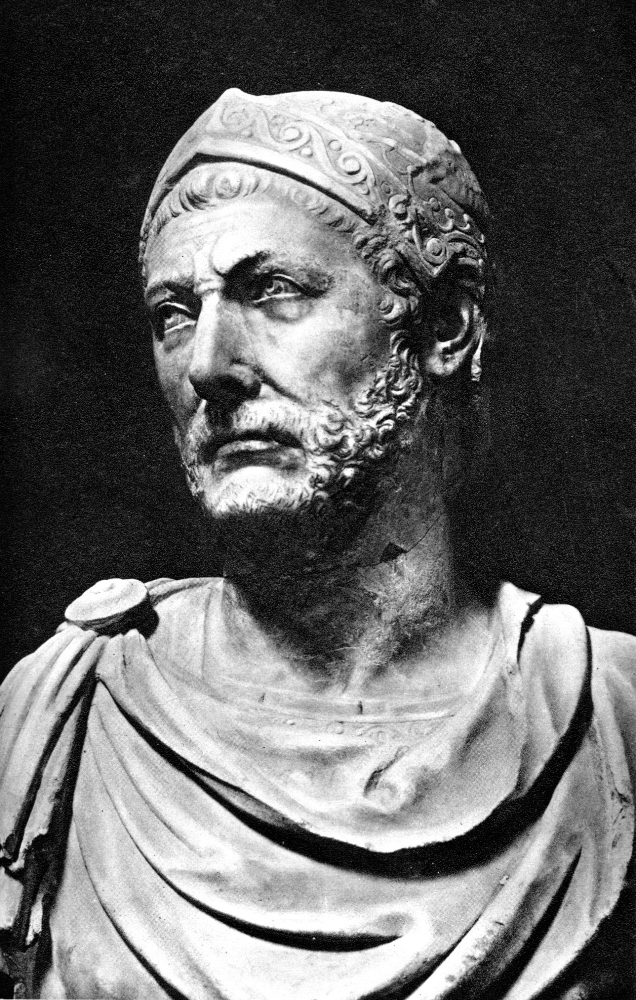

Hanibal Barca was a Carthaginian general best known for his invasion of the Roman Republic in the 200's BC. He defeated the roman republic in three huge victories: the Trebia river, Lake Trasimene, and the battle of Cannae (or Carrhae. I always get the two battles mixed up). He was a master of ambush tactics, and had an eerie ability to surprise his enemies and strike from the places that they would least expect. During the Second Punic war, his army would rage across Rome for years before finally being defeated by another great hero, Scipio Africanus, at the battle of Zama.
What was truly crazy about Hannibal's campaign was that he essentially tap-danced across Italy on his own. His support from Carthage was nominal and shallow at best (Honestly, it was pretty much non-existant) and he was pretty much living off the land and recruiting large amount of auxilaries from Gaul and provincial Italy to replace his losses after fighting battles.
We may not recognize the significance of it some 2000 years later, but this was a huge deal. Hannibal's battle plans were intricate and interesting, but the ability to keep his force together, feed and equip them, and actually execute these battle plans in hostile territory cannot be emphasized enough.
I highly recommend reading or checking out a video about the battle of Cannae (or Carrhae). Here's a fun, short summary, in case you're interested in what you read here. Hannibal pulls a 4D chess move on the Romans by ambushing them in territory that was basically un-ambushable, winning an unbelievable victory. While none of us are likely to be placed at the head of an army any time soon, we can learn from Hannibal's inventiveness, logistical prowess, and his ability to never give up, even under dire cirsumstances.
